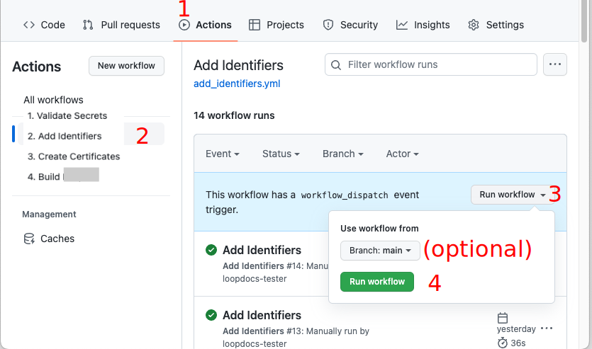
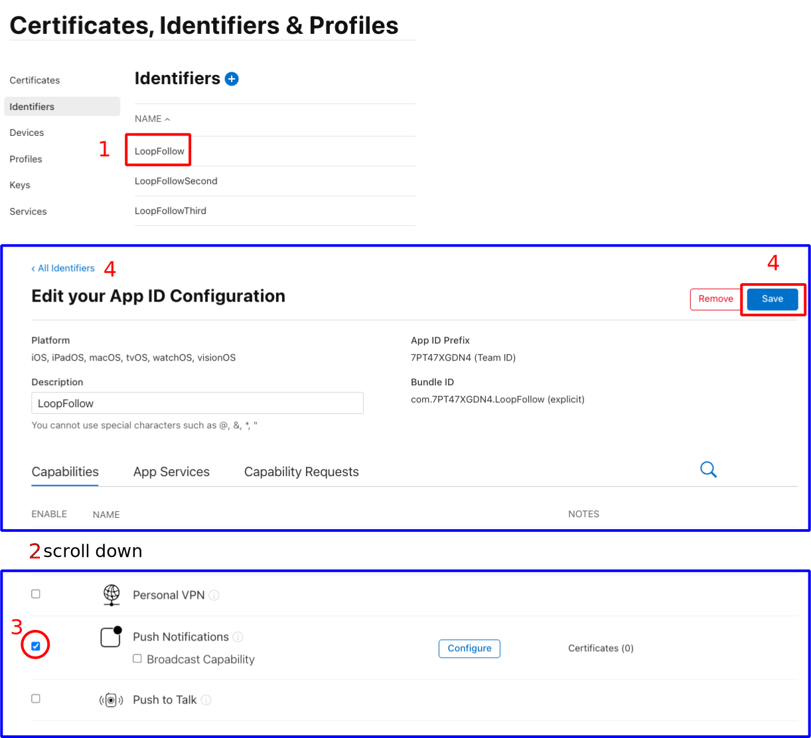
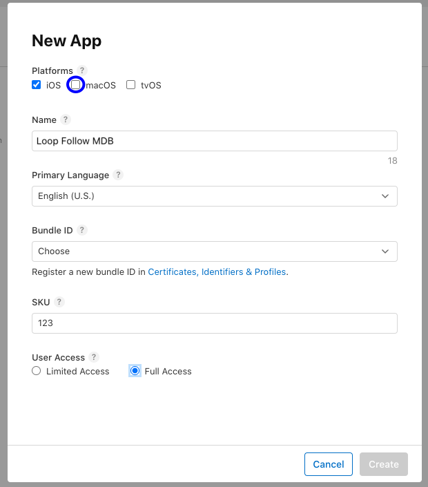
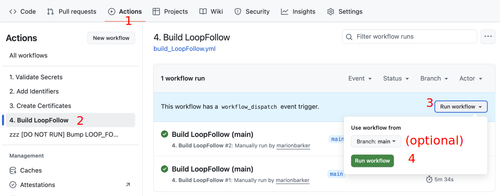

LoopFollow Browser Build
Overview¶
This page is for users who have configured an organization with their build credentials.
- If you don't know what that means, please review the entire Browser Build section in LoopDocs starting with Browser Build Overview
Multiple Copies of LoopFollow¶
For the convenience of caregivers who follow more than one person, you can build up to three instances of LoopFollow.
Customize LoopFollow¶
If you choose, you can:
- Customize the name of the app that appears on your phone
- Display the custom name in the main
LoopFollowscreen
Prerequisites¶
- This page is only for users who have built using Browser Build method before and who have configured an organization that already contains their Secrets.
Summary of Steps to Build LoopFollow¶
Detailed directions are found in the next sections, this is the summary of what you will do:
- Click on the link to open the repository in your browser
Forkthe repository to your organization- Open your
forkand enable Actions Add Identifiers- Update Identifiers
- Add the App in App Store Connect and configure TestFlight users
Build LoopFollow
What About Other Actions
- You already have your organizaton configured, there is no need to run
Validate Secrets - The Build action includes a
Create Certificatesstep - you can run it separately but it is not necessary
Fork LoopFollow¶
You start by opening a browser using the URL from the table below. Most people only need the LoopFollow app to follow one person. If you need to follow more than one person, then repeat the steps for each of the URL in the table. If you need to follow more than three people, reach out to the developers for help.
- Click on the link to open the repository in your browser
- Follow the directions to Create the Fork
Table of App Repositories¶
| App | Fork from this Address |
|---|---|
| LoopFollow | https://github.com/loopandlearn/LoopFollow |
| LoopFollow_Second | https://github.com/loopandlearn/LoopFollow_Second |
| LoopFollow_Third | https://github.com/loopandlearn/LoopFollow_Third |
LoopFollow Display Name Customization (Click to Open/Close)
- Would you like the name of your LoopFollow app to be personalized?
- Do you have more than one Looper, so you are using LoopFollow_Second or LoopFollow_Third?
- The 3 LoopFollow repositories enable you to customize the name shown on your phone
After you fork your LoopFollow repository, find the file named: LoopFollowDisplayNameConfig.xcconfig
- Open it in your browser
- Follow the directions for Display Name Customization for
LoopFollow- "Save the file" means commit the change to your
mainbranch - It is recommended that you use LF_name, where name is the customized name - that way you can find it in an alphabetic list of apps
- "Save the file" means commit the change to your
Create the Fork¶
-
At the upper right side of the screen, click on the word
Fork
-
Refer to the GIF below:
- You will see the display shown in the GIF below where you will choose your organization as the owner
- This GIF is copied from LoopDocs, your screen will show
loopandlearn/LoopFollowinstead ofLoopKit/LoopWorkspace
- This GIF is copied from LoopDocs, your screen will show
- The repository name is already filled in
- It is best not to rename the repository to something else
- It can be confusing if you need to reach out to a mentor for help
- However, if you have 3 people you follow it's fine to use names like:
- LoopFollow_Mary
- LoopFollow_Second_Joe
- LoopFollow_Third_Tom
- Leave the selection that says "
Copy the main branch only" checked - Click on the green
Create forkbutton

- You will see the display shown in the GIF below where you will choose your organization as the owner
Successful Fork¶
After creating the fork, your screen should be similar to the next graphic.
Dismiss Messages
You may or may not see the messages described in the next two bullets. If you see them, dismiss them. No worries if you don't see them. They are not seen in the example screenshot below.
- Near the top right, click on the close button (
x) to dismiss theSuccessfully fetchedmessage - In the middle, click on the
Dismissbutton to remove the "Your branch is not protected" message

- Note that your URL is
https://github.com/my-name-org/LoopFollow - The comment on the second row indicates where the fork came from (that is a clickable link)
- The branch selected is
main - The message says "
This branch is up to date with loopandlearn/LoopFollow:main"
Add Identifiers¶
Near the top middle of your Repository fork, click on the "Actions" tab.
- If this is the first
Actionyou run with this repository you'll be informed thatWorkflows aren't being run on this forked repository- Tap on the green button that says:
I understand my workflows, go ahead and enable them
- Tap on the green button that says:
Refer to the graphic below for the numbered steps:
- Click on the "Actions" tab of your repository
- On the left side, click on "Add Identifiers"
- On the right side, click "Run Workflow" to show a dropdown menu
- You will see your default branch (
main) - You can select a different branch, but typically, you run the default
- You will see your default branch (
-
Tap the green button that says "Run workflow"

The Add Identifier Action should succeed or fail in a few minutes.
- If you see the green check () continue to the next section
- If you see the red
X():- Use the Browser Build Errors page to resolve the error, then repeat the Action
- Quick Reference for Browser Build Errors
Review App Identifier¶
Open this link: Certificates, Identifiers & Profiles: Identifiers List on the apple developer site.
After successfully performing the Add Identifiers Action, you will see the identifier for your app with a Name and Bundle ID matching that in the table below. You will see your unique TEAMID embedded in the identifier. (If you previously built this App with Xcode, the name may start with XC but the ending should match.)
| App Name | Name | Bundle ID |
|---|---|---|
| LoopFollow | LoopFollow | com.TEAMID.LoopFollow |
If you build from a second or third
repositoryforLoopFollow, the Name will end inSecondorThirdand Bundle ID will have.Secondor.Thirdat the end.
Add Push Notifications Capability to LoopFollow Identifiers¶
For LoopFollow 4.0 and later, you must manually enable the Push Notifications capabilty for the LoopFollow Identifier.
The example graphic below has numbered steps that match these directions:
Click to open the Certificates, Identifiers & Profiles: Identifiers List page.
- Locate the LoopFollow Identifer and click on it to open the
Edit your App ID Configurationscreen- The name in the
NAMEcolumn may be different if you previously built with a Mac using Xcode, in that case it will start with XC
- The name in the
- Looking at the
App Servicescolumn, scroll down to thePush Notificationsrow - If the check box is not checked, you must check it
- Scroll back to the top and hit Save if you modified that value or All Identifiers if you made no changes
If you made a change and hit Save, you then need to Tap Continue and Tap Save to complete the process.

Repeat this step if you use LoopFollow_Second or LoopFollow_Third.
Create App in App Store Connect¶
You must create an App in App Store Connect if you don't already have one.
Examine the table below for the bundle ID associated with your app.
| App Name | Bundle ID |
|---|---|
| LoopFollow | com.TEAMID.LoopFollow |
If you build from a second or third
repositoryforLoopFollow, the Bundle ID will have.Secondor.Thirdat the end.
-
Open this link: App Store Connect / Apps to view your apps; log in if needed.
-
If this App already exists, you can continue to the build step
-
Click the Add Apps button or the blue "plus" icon and select New App as shown in the graphic below

-
The New App dialog box opens and should appear similar to the graphic below. Before you fill anything out, make sure your Bundle ID is available in the dropdown menu. If you do not see the Bundle ID for your app; you should ask a mentor for help.
- Select "iOS". For LoopFollow you can also select "macOS" if you own a Mac with macOS 11 or later.
- Enter a name: this will have to be unique
- You could start with "App Name ABC" where ABC are your initials
- If that is already taken, you can add a number, for example, "App Name ABC 123"
- This name is what you see on the App Store Connect list and in the TestFlight app
- Once installed on your phone, you will see the actual app name
- You can Change the App Store Connect Name later if you want
- Select your primary language.
- Choose the bundle ID for your app
- SKU can be anything; for example "123" but must be unique across all your apps, so try 1234 or 12345 depending on how many apps you build with this method
- Select "Full Access".

-
Click Create but do not fill out the next form. That is for submitting to the app store and you will not be doing that.
You are done with the create app step.
You will use this same browser location to complete the next step. Tap on the TestFlight tab at the top of the page.
Add Users to TestFlight for App¶
If you are not already on your app page because you just created it, use this link to get there: App Store Connect / Apps. Find your app and click on it and then select the TestFlight tab at the top of the page.
You need to configure a TestFlight Internal Testing Group for each app you build and invite the users (including yourself).
- Each person added to the Internal Testing Group gets an invitation to join the group for this app
- Then after each successful build of the app, group members will get a notification when the new build is transferred to TestFlight and is available for use
- They open the TestFlight app on their phone to install the new build
If you need detailed instruction, visit Configure to Use Browser: TestFlight Users Overview.
Build App¶
Display Name Customization for LoopFollow¶
If you build
LoopFollowfor one, two or three loopers, you may choose to customize yourforkorforksto insert a custom display name.
- Find and click on the file
LoopFollowDisplayNameConfig.xcconfig- Tap the pencil icon so you can edit the file
- The last line says
display_name = LoopFollow(orLoopFollow_SecondorLoopFollow_Third)- Insert your custom name so the last line says
display_name = LF custom name- Click on commit changes and chose to commit directly into the
mainbranchContinue to build as instructed below. After you install the app on your phone, iPad or Mac via TestFlight, that custom name is what is displayed. The prefix LF is suggested to make it easier to find the custom named
LoopFollowapp in the list of apps, but is not required.
Build Action¶
- Click on the Actions tab of your LoopFollow repository
- On the left side, click on
4. Build LoopFollow - On the right side, click Run Workflow to show a dropdown menu
- Tap the green button that says Run workflow.

Once this completes, be sure to update from TestFlight to get the updated version of LoopFollow on your phone.
Repeat the build and install from TestFlight steps if you use LoopFollow_Second or LoopFollow_Third.
Your app should eventually appear on App Store Connect.
Build Errors¶
Refer to the Browser Build: Build Errors to find your error.
Please do not remove an existing app if you have trouble building a new one. Your build error is not cause by any existing app.
Removing App Warning
If you remove an app and later want to restore that app, you might not be able to.
Install on Phone¶
The LoopDocs instructions: Install on Phone walk you through the steps to install the app to a phone. When going through those steps, replace your App Name for Loop. Everything else is the same.